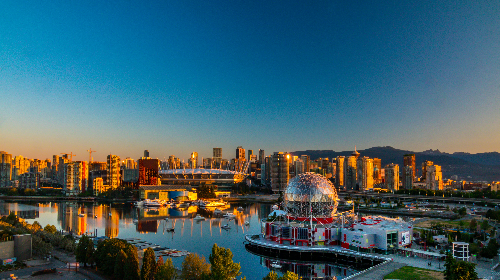

Why Vancouver
Something fun about Vancouver
Vancouver, a bustling west coast seaport in British Columbia, is among Canada’s densest, most ethnically diverse cities. A popular filming location, it’s surrounded by mountains, and also has thriving art, theatre and music scenes.
RESTAURANTS
My Favourite Restaurants in Vancouver
Virtuous Pie
Virtuous Pie is a local, vegan pizzeria with an inspiring menu.
Address:
583 Main St, Vancouver, BC V6A 0C8

Restaurant 2
Amazing fusion cuisine with a cozy atmosphere.
Address:
123 Foodie St, Vancouver, BC V6B 1A1

Restaurant 3
A popular spot for fresh seafood and waterfront views.
Address:
456 Ocean Ave, Vancouver, BC V6C 2Z4